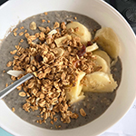

Giovanni Perruzzi
Intro
I am Giovanni Perruzzi, a full-time student at Fanshawe College. I have been studying at Fanshawe College located at 1001 Fanshawe College Blvd. London, Ontario, Canada for a couple of weeks. So far, my classes have been easy.
Background
My background goes like this: Sir Isaac Brock Public School, Saunders Secondary School, Fanshawe College. I worked at Cineplex Digital Media as a Software Developer from Sep 2018 to Dec 2018 as a Co-op student. I helped make many projects, such as an RBC application that went live. I have decided to become a web developer/designer as a full-time job.
Work
As a developer/Designer in web content. I have made some websites but not that much design work. I like to design and code; the course I am taking goes well with what I want. I have made a couple websites before for myself and school, but I never had the chance to put my work into action in the work field.

Joanna Chow
About Myself
I am an international student studying Interactive Media Design at Fanshawe College. I am always an art lover. I came from an academic background in arts management. After working in the industry for a few years, I decided to change my career to design, which brought me into the program. I aspire to become a UX/UI designer after graduation.
What I eat for breakfast…
When it comes to breakfast, I enjoy eating oatmeal with my secret ingredients. I like to add everything in the oatmeal and make it a bowl full of nutrition. I usually add protein powder, chia seed, flax seed, cocoa powder, peanut butter, and banana. Although It tastes complicated, it is definitely a good meal that gives you all-day energy!